정보처리산업기사 (2020-08-22 기출문제)
1과목: 데이터 베이스
1. 시스템 카탈로그에 대한 설명으로 옳지 않은 것은?
- 시스템 자체에 관련 있는 다양한 객체에 관한 정보를 포함하는 시스템 데이터베이스이다.
- 카탈로그들이 생성되면 자료 사전에 저장되기 때문에 좁은 의미로는 자료 사전이라고도 한다.
- 무결성 확보를 위하여 일반 사용자는 내용을 검색할 수 없다.
- 기본 테이블, 뷰, 인덱스, 패키지, 접근 권한 등의 정보를 저장한다.
(정답률: 80%)

2. 테이블, 뷰, 인덱스 제거 시 사용하는 명령문은?
- CREATE 문
- DROP 문
- ALERT 문
- CLOSE 문
(정답률: 85%)
3. 관계해석에 대한 설명으로 틀린 것은?
- 관계 데이터의 연산을 표현하는 방법이다.
- 원하는 정보와 그 정보를 어떻게 유도하는가를 기술하는 절차적인 언어이다.
- 튜플 관계해석과 도메인 관계해석이 있다.
- 관계대수로 표현한 식은 관계해석으로 표현할 수 있다.
(정답률: 63%)
4. 트랜잭션의 특성 중 “all or nothing”, 즉 트랙잭션의 연산은 데이터베이스에 모두 반영되든지 아니면 전혀 반영되지 않아야 함을 의미하는 특성은?
- atomicity
- consistency
- isolation
- durability
(정답률: 59%)
5. 데이터베이스 3단계 구조 중 사용자나 응용프로그래머가 사용할 수 있도록 데이터베이스를 정의한 것은?
- 외부 스키마(External Schema)
- 개념 스키마(Conceptual Schema)
- 내부 스키마(Internal Schema)
- 관계 스키마(Relational Schema)
(정답률: 62%)
6. 데이터베이스 물리적 설계의 옵션 선택시 고려사항으로 거리가 먼 것은?
- 트랜잭션 처리량
- 공간 활용도
- 응용프로그램의 양
- 응답 시간
(정답률: 55%)
7. 데이터베이스 설계 단계 중 논리적 설계 단계에 해당하는 것은?
- 개념 스키마를 평가 및 정제하고 DBMS에 따라 서로 다른 논리적 스키마를 설계한다.
- 데이터베이스 파일의 저장 구조 및 액세스 경로를 결정한다.
- 물리적 저장장치에 저장할 수 있는 물리적 구조의 데이터로 변환하는 과정이다.
- 저장 레코드의 형식, 순서, 접근 경로 등의 정보가 컴퓨터에 저장되는 방법을 묘사한다.
(정답률: 61%)
8. 다음 인접 행렬(Adjacency Matrix) 대응되는 그래프(Graph)를 그렸을 때, 옳은 것은?
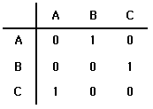
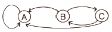
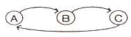
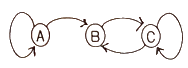
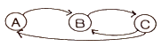
(정답률: 73%)
9. 다음 자료를 삽입 정렬을 이용하여 오름차순으로 정렬할 경우 “pass 5”의 결과는?
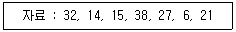
- 14, 15, 27, 32, 38, 6, 21
- 14, 15, 32, 38, 27, 6, 21
- 6, 14, 15, 27, 32, 38, 21
- 6, 14, 15, 21, 27, 32, 38
(정답률: 46%)
10. 정렬 알고리즘 선택시 고려하여야 할 사항으로 거리가 먼 것은?
- 데이터의 양
- 초기 데이터의 배열상태
- 키 값들의 분포상태
- 운영체제의 종류
(정답률: 72%)
11. 총 6개의 튜플을 갖는 EMPLOYEE 테이블에서 DEPT_ID 필드의 값은 “D1”이 2개, “D2”가 3개, “D3”가 1개로 구성되어 있다. 다음 SQL문 ㉠, ㉡의 실행 결과 튜플 수로 옳은 것은?
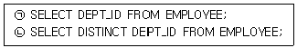
- ㉠ 3, ㉡ 1
- ㉠ 3, ㉡ 3
- ㉠ 6, ㉡ 1
- ㉠ 6, ㉡ 3
(정답률: 68%)
12. 다음의 중위(infix) 표기식을 전위(prefix) 표기식으로 옳게 변환한 것은?
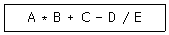
- - + * A B C / D E
- A B * C + D E / -
- A B C D E * + - /
- * + - / A B C D E
(정답률: 61%)
13. 다음 내용과 관련되는 SQL 명령은?
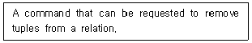
- KILL
- DELETE
- DROP
- ERASE
(정답률: 63%)
14. 입력 데이터가 R = (71, 2, 38, 5, 7, 61, 11, 26, 53, 42)일 때 2-Way Merge Sort를 2회전한 후 결과는?
- R = (2, 5, 38, 71, 7, 11, 26, 61, 42, 53)
- R = (71, 2, 5, 38, 7, 61, 11, 26, 42, 53)
- R = (5, 2, 7, 11, 26, 38, 61, 71, 42, 53)
- R = (2, 5, 7, 11, 26, 38, 42, 53, 71, 61)
(정답률: 56%)
15. n개의 원소를 정렬하는 방법 중 평균 수행시간 복잡도와 최악 수행시간 복잡도가 모두 O(nlog2n)인 정렬은?
- 삽입 정렬
- 힙 정렬
- 버블 정렬
- 선택 정렬
(정답률: 60%)
16. 정규화의 원칙으로 거리가 먼 것은?
- 하나의 스키마에서 다른 스키마로 변환시킬 때 정보의 손실이 있어서는 안 된다.
- 이상현상 제거를 위해 데이터의 종속성이 많아야 한다.
- 하나의 독립된 관계성은 하나의 독립된 릴레이션으로 분리시켜 표현한다.
- 데이터의 중복성이 감소되어야 한다.
(정답률: 71%)
17. 관계를 맺고 있는 릴레이션 R1, R2에서 릴레이션 R1이 참조하고 있는 릴레이션 R2의 기본키와 같은 R1 릴레이션의 속성을 무엇이라 하는가?
- 후보 키(Candidate Key)
- 외래 키(Foreign Key)
- 슈퍼 키(Super Key)
- 대체 키(Alternate Key)
(정답률: 66%)
18. 다음 ( ) 에 알맞은 용어는?
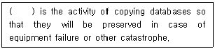
- Concurrency Control
- Backup
- Normalization
- Transaction
(정답률: 71%)
19. 릴레이션의 기본키를 구성하는 어떤 속성도 널(Null) 값이나 중복 값을 가질 수 없음을 의미하는 것은?
- 참조 무결성 제약조건
- 정보 무결성 제약조건
- 개체 무결성 제약조건
- 주소 무결성 제약조건
(정답률: 65%)
20. E-R 다이어그램에서 개체를 의미하는 기호는?
- 사각형
- 오각형
- 삼각형
- 타원
(정답률: 68%)
2과목: 전자 계산기 구조
21. 하드웨어 우선순위 인터럽의 특징으로 틀린 것은?
- 가격이 비싸다.
- 유연성이 있다.
- 응답속도가 빠르다.
- 하드웨어로 우선순위를 결정한다.
(정답률: 54%)
22. IEEE754에서 규정한 부동소수점 표현 방법에서 비트 형식에 해당하지 않는 것은?
- 가수
- 부호
- 지수
- 소수점
(정답률: 52%)
23. 누산기에 관한 설명 중 옳은 것은?
- 기억 장치의 일부이다.
- 제어기능을 수행한다.
- 보조기억장치에 포함되어 있다.
- 연산한 결과를 임시 저장하는 곳이다.
(정답률: 59%)
24. 8bit register의 데이터가 00101001 이다. 이 데이터를 4배 증가시키려고 할 때 취하는 연산 명령은?
- Shift Left 4회
- Shift Left 2회
- Shift Right 4회
- Shift Right 2회
(정답률: 57%)
25. AND 연산을 이용하여 어느 비트(문자)를 지울 것인가를 결정하는 것은?
- 캐리(carry)
- 플립플롭
- 패리티(parity) 비트
- 마스크(mask) 비트
(정답률: 54%)
26. 인터럽트의 발생 원인으로 틀린 것은?
- 정전
- 서브 프로그램 호출
- 오버플로우(overflow) 발생
- 오퍼레이터(operator)의 조작
(정답률: 50%)
27. 인터럽트 처리 과정 중 인터럽트 요청한 장치를 차례대로 검사하는 방식은?
- 폴링
- 핸드세이킹
- 데이지 체인
- 벡터 인터럽트
(정답률: 49%)
28. 명령(Instruction) 중에서 PC←X 와 같은 의미를 뜻하는 것은?
- JMP X
- ADD X
- MOV X
- STA X
(정답률: 44%)
29. CAM(Content Addressable Memory)의 특징으로 옳은 것은?
- 하드웨어 비용이 대단히 적다.
- 주소 공간의 확대가 목적이다.
- 구조 및 동작이 대단히 간단하다.
- 저장된 정보의 내용 자체로 검색한다.
(정답률: 46%)
30. 7bit 코드에서 정보 전송 시에 발생하는 오류의 검색이 용이한 코드는?
- 2421 code
- excess-3 code
- biquinary code
- 8421 code
(정답률: 48%)
31. 2진수 1010(2)을 그레이 코드로 변환하면?
- 1010
- 0101
- 1111
- 0000
(정답률: 52%)
32. 다음에서 설명하고 있는 것은 무엇인가?
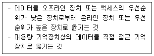
- saving
- spooling
- storing
- staging
(정답률: 41%)
33. 8×2 RAM을 이용하여 16×4 메모리를 구성하고자 한다. 몇 개의 8×2 RAM이 필요한가?
- 2
- 4
- 8
- 16
(정답률: 56%)
34. 64K인 주소공간과 4K인 기억공간을 가진 PC인 경우 한 페이지(Page)가 512워드라면 블록의 개수와 블록 주소 비트는?
- 8개, 3비트
- 16개, 4비트
- 32개, 5비트
- 64개, 6비트
(정답률: 33%)
35. Cycle Stealing에 대한 설명으로 옳은 것은?
- CPU가 메모리를 접근할 때 사용된다.
- I/O controller가 task의 완료를 CPU에 알리는 것이다.
- 외부 입력의 속도와 CPU의 속도를 맞추기 위해 사용된다.
- 주변장치가 기억장치를 접근할 때 CPU가 기억장치를 접근하지 못하게 하는 것이다.
(정답률: 42%)
36. 그림과 같은 연산회로에서 얻어지는 마이크로 오퍼레이션은? (단, A, 0, C는 입력이고, Y는 출력이다.)
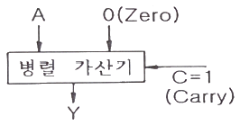
- A를 1 감소
- A를 전송
- A를 1 증가
- 감산
(정답률: 59%)
37. SRAM에 대한 설명으로 틀린 것은?
- DRAM에 비해 회로의 집적도가 낮다.
- DRAM에 비해 가격이 비싸다.
- 일정한 시간마다 재충전이 필요하다.
- DRAM에 비해 전력 소모가 크다.
(정답률: 50%)
38. MAR(Memory Address Register)의 역할 중 가장 옳은 것은?
- 수행되어야 할 프로그램의 주소를 가리킨다.
- 메모리에 보관된 내용을 누산기에 전달하는 역할을 한다.
- 고급 수준 언어를 기계어로 변환해 주는 일종의 소프트웨어이다.
- CPU에서 기억장치 내의 특정 번지에 있는 데이터나 명령어를 인출하기 위해 그 번지를 기억하는 역할을 한다.
(정답률: 54%)
39. 명령어 사이클(Instruction Cycle)에 해당하지 않는 것은?
- Fetch Cycle
- Control Cycle
- Indirect Cycle
- Interrupt Cycle
(정답률: 42%)
40. 마이크로 오퍼레이션 수행에 필요한 시간은?
- Search time
- Seek time
- Access time
- CPU clock time
(정답률: 43%)
3과목: 시스템분석설계
41. 다음과 같은 오류 발생 형태의 종류는?
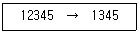
- Transcription Error
- Transposition Error
- Addition Error
- Omission Error
(정답률: 52%)
42. 시스템 오류 검사 기법 중 수신한 데이터를 송신 측으로 되돌려 보내 원래의 데이터와 비교하여 오류 여부를 검사하는 방법은?
- Balance Check
- Range Check
- Limit Check
- Echo Check
(정답률: 59%)
43. 프로세스 설계에 대한 설명과 거리가 먼 것은?
- 입력 정보를 이용하여 출력 정보를 생성하는 과정
- 사용하는 하드웨어 및 소프트웨어의 성능과 무관하게 설계
- 프로세스 흐름도를 작성한 후 그 내용에 따라 각각의 프로세스의 논리를 설계
- 시스템의 성능을 고려한 효율적인 처리과정을 표현
(정답률: 64%)
44. 자료 사전에서 사용되는 기호 중 자료 항목이 생략될 수도 있음을 나타내는 기호는?
- ( )
- #
- &
- !
(정답률: 58%)
45. IPT(Improved Programming Technique) 기법에 대한 설명과 거리가 먼 것은?
- 프로그램 생산성 향상을 위해 이용되는 기법을 총칭한다.
- HIPO, N-S Chart 등의 도구가 효과적으로 활용될 수 있다.
- 프로그래밍에 GOTO문을 주로 활용한다.
- 프로그램의 품질을 향상시켜 유지보수를 용이하게 한다.
(정답률: 58%)
46. 객체지향 분석 및 설계 방법과 거리가 먼 것은?
- 럼바우(Rumbaugh) 분석 모델
- 코드(Coad)와 요돈(Yourdon) 기법
- 부치(Booch) 기법
- 나시-슈나이더만(Nassi-Schneiderman) 기법
(정답률: 49%)
47. 소프트웨어 개발 단계 중 요구 분석에 대한 설명으로 옳지 않은 것은?
- 자료 수집 → 요구 사항 도출 → 문서화 → 검증의 절차를 거친다.
- 소프트웨어의 기능, 성능, 제약 조건 등에 대하여 기술하고 검토한다.
- 요구 사항은 기능적 요구 사항과 비기능적 요구사항, 사용자 요구 사항과 시스템 요구 사항 등으로 분류된다.
- 요구 분석 명세서의 정확성을 검증하기 위해 화이트박스 테스트를 수행한다.
(정답률: 50%)
48. 다음 중 객체지향언어가 아닌 것은?
- C++
- Smalltalk
- Ada
- COBOL
(정답률: 46%)
49. 코드 설계 시 유의 사항으로 적절하지 않은 것은?
- 사람의 이용에 우선하여 취급이 쉽고 컴퓨터 처리에 적합해야 한다.
- 코드 부여 대상의 증감에 대비한 확장성이 있어야 한다.
- 대상 자료와 일대일로 대응되도록 고유성을 고려하여 설계해야 한다.
- 가능한 많은 자릿수로 많은 항목을 표현해야 한다.
(정답률: 64%)
50. 럼바우(Rumbaugh)의 객체지향 분석 기법에서 자료 흐름도가 활용되는 모델링 단계는?
- 객체 모델링
- 기능 모델링
- 정적 모델링
- 동적 모델링
(정답률: 30%)
51. 정보처리 업무의 표준 처리 패턴 유형 중 2개 이상의 파일에서 조건에 맞는 것을 골라 새로운 레코드로 파일을 만드는 방법은?
- 분배
- 추출
- 정렬
- 조합
(정답률: 54%)
52. 자료 흐름도(DFD)에 대한 설명으로 옳지 않은 것은?
- 구조적 분석용 문서화 도구
- 도형 중심의 표현
- 상향식 분할의 표현
- 자료 흐름 중심의 표현
(정답률: 57%)
53. 시스템의 기본 요소로 적절하지 않은 것은?
- 입력
- 처리
- 명세
- 제어
(정답률: 67%)
54. 다음과 같은 코드 부여 방법의 종류는?
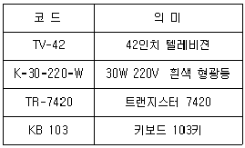
- Group Classification Code
- Sample Code
- Letter Type Code
- Mnemonic Code
(정답률: 47%)
55. 시간의 흐름에 따른 시스템의 변화상을 보여주는 상태 다이어그램을 작성하는 모형화 단계는?
- 객체 모형화(object modeling)
- 동적 모형화(dynamic modeling)
- 기능 모형화(function modeling)
- 정적 모형화(static modeling)
(정답률: 60%)
56. 거래내역이나 변동 내용 등 일시적인 성격을 지닌 정보를 기록하는 파일로 마스터 파일을 갱신하거나 조회하기 위하여 만들어지는 파일은?
- 히스토리 파일(History File)
- 트레일러 파일(Trailer File)
- 원시 파일(Source File)
- 트랜잭션 파일(Transaction File)
(정답률: 49%)
57. 구조적 설계의 평가 기준 중 모듈 응집도가 강한 것에서 약한 것의 순서로 옳게 나열된 것은?
- 절차적 응집도 → 통신적 응집도 → 순차적 응집도 → 기능적 응집도
- 통신적 응집도 → 절차적 응집도 → 순차적 응집도 → 기능적 응집도
- 절차적 응집도 → 통신적 응집도 → 기능적 응집도 → 순차적 응집도
- 기능적 응집도 → 순차적 응집도 → 통신적 응집도 → 절차적 응집도
(정답률: 37%)
58. 시스템의 특성 중 다음 설명에 해당하는 것은?
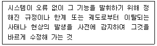
- 목적성
- 자동성
- 종합성
- 제어성
(정답률: 61%)
59. 테스트 단계 중 시스템을 당장 사용할 수 있도록 준비되어 있는지 확인하기 위한 단계로, 베타 테스트가 포함된 테스트 단계는?
- 단위모듈 테스트
- 통합 테스트
- 시스템 테스트
- 인수 테스트
(정답률: 38%)
60. 자료 사전에서 사용되는 기호 중 주석을 의미하는 것은?
- { }
- * *
- =
- +
(정답률: 68%)
4과목: 운영체제
61. 시스템과 그 시스템 내의 자료에 대한 정보의 무결성과 안정성을 어떻게 보장할 것인지에 관련된 사항을 의미하는 것은?
- 보호
- 보안
- 침투
- 해킹
(정답률: 68%)
62. LRU 교체 알고리즘을 사용하고 페이지 참조의 순서가 다음과 같을 경우 할당된 프레임의 수가 3개일 때 몇 번의 페이지 부재가 발생하는가? (단, 현재 모든 페이지 프레임은 비어 있다고 가정한다.)
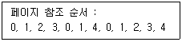
- 7
- 8
- 9
- 10
(정답률: 32%)
63. UNIX에서 I-node는 파일을 구성하는 모든 물리적 블록들의 위치를 알 수 있는 정보를 가지고 있다. I-node가 나타내는 정보가 아닌 것은?
- 파일의 우선 순위
- 소유자의 사용자 번호
- 파일에 대한 링크의 수
- 소유자가 속한 그룹의 번호
(정답률: 35%)
64. 구역성(Locality)에 대한 설명으로 틀린 것은?
- 구역성의 종류로는 시간(temporal) 구역성과 공간(spatial) 구역성이 있다.
- 실행중인 프로세스가 일정 시간 동안에 참조하는 페이지의 집합을 의미한다.
- 공간 구역성은 기억장소가 참조되면 그 근처의 기억장소가 다음에 참조되는 경향이 있음을 나타내는 이론이다.
- 일반적으로 공간 구역성의 예는 배열순례(Array-Traversal), 순차적 코드의 실행 등이 있다.
(정답률: 34%)
65. HRN 스케줄링 기법을 적용할 경우 우선 순위가 가장 낮은 것은?
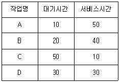
- A
- B
- C
- D
(정답률: 46%)
66. 파일을 구성하는 기본적인 자료항목은 무엇인가?
- Key
- Record
- Qualifier
- Segment
(정답률: 52%)
67. 운영체제에 대한 설명으로 틀린 것은?
- 기억 장치, 입출력 장치, 정보 관리 등의 자원을 관리한다.
- 운영체제의 운용기법 중 일괄처리시스템은 라운드로빈 방식이라고도 한다.
- 사용자가 컴퓨터 하드웨어를 사용하기 쉽도록 컴퓨터와 사용자간의 인터페이스를 지원한다.
- 자원을 효율적으로 관리하기 위해서 스케줄링 기능을 제공한다.
(정답률: 54%)
68. 로더(Loader)를 사용하여 여러 목적 프로그램간의 외부 기호 참조를 해결하려 할 때 사용되는 로더의 기능은 무엇인가?
- 할당(Allocation)
- 연결(Linking)
- 재배치(Relocation)
- 적재(Loading)
(정답률: 50%)
69. 프로그램이 실행되는 과정에서 발생하는 기억장치 참조는 한 순간에는 아주 지역적인 일부 영역에 대하여 집중적으로 이루어진다는 성질을 의미하는 것은?
- Locality
- Monitor
- Thrashing
- Working set
(정답률: 55%)
70. 분산 처리 시스템의 설계 목적으로 틀린 것은?
- 자원공유
- 신뢰도 향상
- 연산속도 향상
- 시스템 설계의 단순화
(정답률: 47%)
71. 시스템 소프트웨어의 설명 중 틀린 것은?
- 복잡한 수학 계산을 처리한다.
- 프로그램을 주기억장치에 적재시킨다.
- 시스템 전체를 작동시키는 프로그램이다.
- 인터럽트 관리, 장치 관리 등의 기능을 담당한다.
(정답률: 47%)
72. 강 결합(tightly-coupled) 시스템에 대한 설명으로 틀린 것은?
- 병렬적으로 작업을 수행하는 다중 처리기 시스템이다.
- 여러 처리기가 하나의 기억장치를 공유한다.
- 시스템 전체에는 하나의 운영체제만이 존재한다.
- 프로세서 간의 통신은 메시지 전달이나 원격 프로시저 호출을 통해서 이루어진다.
(정답률: 33%)
73. 스레드에 대한 설명으로 틀린 것은?
- 상태의 절감은 하나의 연관된 스레드 집단이 기억장치나 파일과 같은 자원을 공유함으로써 이루어진다.
- 프로세스 내부에 포함되는 스레드는 공통적으로 접근 가능한 기억장치를 통해 효율적으로 통신한다.
- 스레드란 프로세스보다 더 작은 단위를 말하며, 다중 프로그래밍을 지원하는 시스템 하에서 CPU에게 보내져 실행되는 또 다른 단위를 의미한다.
- 프로세스가 여러 개의 스레드들로 구성되어 있을 때, 하나의 프로세스를 구성하고 있는 여러 스레드들은 모두 공통적인 제어 흐름을 갖는다.
(정답률: 46%)
74. 주기억장치 관리기법 중 “Best Fit” 기법 사용 시 20K의 프로그램은 주기억장치 영역 번호 중 어느 곳에 할당되는가?
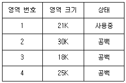
- 영역 번호 1
- 영역 번호 2
- 영역 번호 3
- 영역 번호 4
(정답률: 53%)
75. 디스크 파일 시스템에서 디스크로부터 판독 혹은 기록할 경우의 최소 단위는?
- 팩
- 트랙
- 섹터
- 실린더
(정답률: 44%)
76. 모니터에 관한 설명으로 틀린 것은?
- 정보의 은폐 기법을 사용한다.
- 자원 요구 프로세스는 그 자원 관련 모니터 진입부를 반드시 호출한다.
- 모니터 외부의 프로세스는 모니터 내부의 데이터를 직접 액세스 할 수 없다.
- 한 순간에 두 개 이상의 프로세스가 모니터에 진입할 수 있다.
(정답률: 48%)
77. 사용자가 요청한 디스크 입·출력 내용이 아래와 같은 순서로 큐에 들어 있다. 현재 헤드 위치는 70이고, 가장 안쪽이 1번, 가장 바깥쪽이 200번 트랙이라고 할 때, SSTF스케줄링을 사용하면 가장 먼저 처리되는 것은?
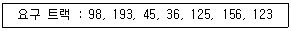
- 36
- 45
- 98
- 123
(정답률: 43%)
78. 다중 처리기의 운영체제 구조 중 주종(Master/Slave) 처리기에 대한 설명으로 옳지 않은 것은?
- 주프로세서가 고장 날 경우에도 전체 시스템이 다운되지 않는다.
- 주프로세서는 입·출력과 연산을 담당한다.
- 종프로세서는 입·출력 발생 시 주프로세서에게 서비스를 요청한다.
- 주프로세서가 입·출력을 수행하므로 비대칭 구조를 갖는다.
(정답률: 53%)
79. 분산 처리 시스템의 계층 구조 중 틀린 것은?
- 기억장치 계층
- 프로세스 계층
- 연결 전략 계층
- 사용자 프로그램 계층
(정답률: 39%)
80. 프로세스의 정의 중 틀린 것은?
- 실행중인 프로그램
- PCB를 가진 프로그램
- 프로세서가 할당되는 실체
- 동기적 행위를 일으키는 주체
(정답률: 47%)
5과목: 정보통신개론
81. 통신속도가 50(Baud)일 때 최단부호펄스의 시간(sec)은?
- 2
- 1
- 0.5
- 0.02
(정답률: 46%)
82. 반송파의 진폭과 위상을 변화시켜 정보를 전달하는 디지털 변조방식은?
- QAM
- FM
- FSK
- PSK
(정답률: 47%)
83. 아날로그 데이터를 디지털 신호로 변환하는 대표적인 PCM(Pulse Code Modulation)변조 방식의 과정은?
- 표본화 → 양자화 → 부호화 → 복호화
- 표본화 → 부호화 → 복호화 → 양자화
- 표본화 → 부호화 → 양자화 → 복호화
- 표본화 → 복호화 → 부호화 → 양자화
(정답률: 55%)
84. HDLC의 프레임 구조에 포함되지 않는 것은?
- 스타트 필드(Start Fieid)
- 플래그 필드(Flag Fieid)
- 주소 필드(Address Field)
- 제어 필드(Control Field)
(정답률: 48%)
85. 회선교환방식에 대한 설명으로 거리가 먼 것은?
- 속도나 코드변환이 용이하다.
- 점대점 방식의 전송구조를 갖는다.
- 접속에는 긴 시간이 소요되나 전송지연은 거의 없다.
- 고정적인 대역폭을 갖는다.
(정답률: 29%)
86. 인터넷과 같은 상거래 이용 시 신용카드 거래체계를 안전하게 거래 할 수 있도록 보장해주는 보안 프로토콜은?
- UDP
- SET
- SMTP
- ICMP
(정답률: 34%)
87. 데이터 프레임을 연속적으로 전송 중 NAK를 수신하면 오류가 발생한 프레임 이후에 전송된 모든 데이터 프레임을 재전송하는 오류제어 방식은?
- Go-back-N ARQ
- Seletive-Repeat ARQ
- Stop-And-Wait ARQ
- Forward Error Connection
(정답률: 53%)
88. 둘 이상의 서로 다른 네트워크에 접속하여 서로간에 데이터를 주고 받을 수 있도록 경로 선택, 혼잡 제어, 패킷 폐기 기능을 수행하는 것은?
- Hub
- Repeater
- Router
- Bridge
(정답률: 53%)
89. DNS 서버가 사용되는 TCP 포트 번호는?
- 11
- 26
- 53
- 104
(정답률: 44%)
90. 패킷교환방식에 대한 설명으로 틀린 것은?
- 교환기에서 패킷을 일시 저장 후 전송하는 축적교환 기술이다.
- 패킷처리 방식에 따라 데이터그램과 가상회선 방식이 있다.
- 패킷 교환망에서 DTE와 DCE 간 인터페이스를 위한 프로토콜로 X.25가 있다.
- 고정된 대역폭으로 데이터를 전송한다.
(정답률: 46%)
91. LAN의 토폴로지 형태에 해당하지 않는 것은?
- Star형
- Bus형
- Ring형
- Sqare형
(정답률: 57%)
92. TCP 헤더의 플래그 비트에 해당되지 않는 것은?
- URG
- ENG
- SYN
- FIN
(정답률: 40%)
93. 데이터통신에서 양방향으로 동시에 송·수신이 가능한 전송방식은?
- Simplex
- Half–Duplex
- Full-Duplex
- Single-Duplex
(정답률: 64%)
94. 변조속도가 1600(baud)이고 트리비트(tribit)를 사용한다면 전송속도(bps)는?
- 1600
- 3200
- 4800
- 6400
(정답률: 58%)
95. 단일 기관에 의해 소유된 근접 거리 내에서 다양한 컴퓨터 물리 자원들이 상호간에 정보자원의 공유를 가능하게 하며 다양한 형태의 통신망으로 구성이 가능한 것은?
- LAN
- VAN
- WAN
- ATM
(정답률: 61%)
96. 반송파로 사용하는 정현파의 위상에 정보를 실어 보내는 변조방식은?
- ASK
- DM
- PSK
- ADPCM
(정답률: 45%)
97. IEEE 802 시리즈의 표준화 모델이 옳게 짝지어진 것은?
- IEEE 802.2 - 매체접근 제어(MAC)
- IEEE 802.3 - 광섬유 LAN
- IEEE 802.4 - 토큰 버스(Token Bus)
- IEEE 802.5 - 논리링크 제어 (LLC)
(정답률: 45%)
98. 아날로그 음성 데이터를 디지털 형태로 변환하여 전송하고, 디지털 형태를 원래의 아날로그 음성 데이터로 복원시키는 것은?
- CCU
- DSU
- CODEC
- DTE
(정답률: 55%)
99. OSI 7계층 중 종점 호스트 사이의 데이터 전송을 다루는 계층으로 종점 간의 연결 관리, 오류제어와 흐름제어 등을 수행하는 계층은?
- 응용 계층
- 전송 계층
- 프리젠테이션 계층
- 물리 계층
(정답률: 54%)
100. ITU-T에서 1976년에 패킷교환망을 위한 표준으로 처음 권고한 프로토콜은?
- X.25
- I.9577
- CONP
- CLNP
(정답률: 54%)